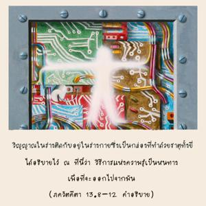
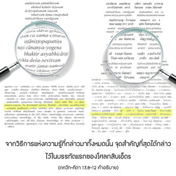
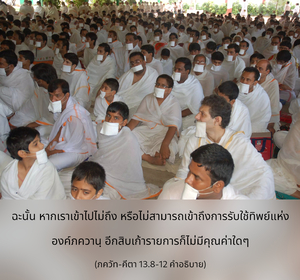
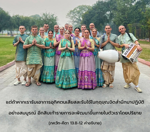
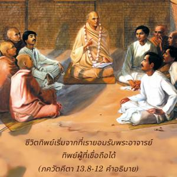

ความถ่อมตน ความไม่หยิ่งยะโส ความไม่เบียดเบียน ความอดทน ความเรียบง่าย การเข้าพบพระอาจารย์ทิพย์ผู้ที่เชื่อถือได้ ความสะอาด ความมั่นคง การควบคุมตนเองได้ การละทิ้งอายตนะภายนอกเพื่อสนองประสาทสัมผัส การปราศจากอหังการ การมองเห็นโทษภัยแห่งการเกิด แก่ เจ็บ และตาย ความไม่ยึดติด การเป็นอิสระจากพันธนาการกับลูกหลาน ภรรยา บ้าน ฯลฯ ความเสมอภาคท่ามกลางเหตุการณ์ที่ชื่นชอบและไม่ชื่นชอบ การอุทิศตนเสียสละแก่ข้าด้วยความบริสุทธิ์ ความสม่ำเสมอ ความปรารถนาอยู่ในสถานที่สันโดษ ความไม่ยึดติดกับฝูงชนโดยทั่วไป การยอมรับความสำคัญในการรู้แจ้งแห่งตนและแสวงหาสัจธรรมทางปรัชญา ข้าประกาศว่าทั้งหมดนี้คือ ความรู้ อะไรที่นอกเหนือไปจากนี้คือ อวิชชา







วิธีการแห่งความรู้นี้ บางครั้งมนุษย์ผู้ด้อยปัญญาเข้าใจผิดคิดว่าเป็นผลกระทบซึ่งกันและกันของสนามแห่งกิจกรรม แต่อันที่จริงนี่คือวิธีการที่แท้จริงแห่งความรู้ หากเรายอมรับวิธีการนี้แล้วนั้น ความเป็นไปได้ในการเข้าพบสัจธรรมก็จะบังเกิดขึ้น นี่ไม่ใช่เป็นผลกระทบซึ่งกันและกันของยี่สิบสี่ธาตุดังที่ได้อธิบายมาแล้ว อันที่จริงนี่คือวิถีทางที่จะออกไปจากพันธนาการของธาตุเหล่านี้ วิญญาณในร่างติดกับอยู่ในร่างกาย ซึ่งเป็นกล่องที่ทำด้วยธาตุทั้งยี่สิบสี่ และวิธีการแห่งความรู้ที่ได้อธิบายไว้ที่นี้เป็นหนทางเพื่อที่จะออกไปจากมัน จากวิธีการแห่งความรู้ที่กล่าวมาทั้งหมดนั้น จุดสำคัญที่สุดได้กล่าวไว้ในบรรทัดแรกของโศลกสิบเอ็ด มยิ จานนฺย-โยเคน ภกฺติรฺ อวฺยภิจาริณี วิธีการแห่งความรู้สิ้นสุดลงที่การอุทิศตนเสียสละรับใช้องค์ภควานฺด้วยความบริสุทธิ์ใจ ฉะนั้น หากเราเข้าไปไม่ถึง หรือไม่สามารถเข้าถึงการรับใช้ทิพย์แห่งองค์ภควานฺ อีกสิบเก้ารายการก็ไม่มีคุณค่าใดๆ แต่ถ้าหากเรารับเอาการอุทิศตนเสียสละรับใช้ในกฺฤษฺณจิตสำนึกมาปฏิบัติอย่างสมบูรณ์ อีกสิบเก้ารายการจะพัฒนาขึ้นภายในตัวเราโดยปริยาย ดังที่ได้กล่าวไว้ใน ศฺรีมทฺ-ภาควตมฺ (5.18.12) ยสฺยาสฺติ ภกฺติรฺ ภควตฺยฺ อกิญฺจนา สไรฺวรฺ คุไณสฺ ตตฺร สมาสเต สุราห์ คุณสมบัติดีๆ ทั้งหลายแห่งความรู้จะมีการพัฒนาในบุคคลที่บรรลุถึงระดับแห่งการอุทิศตนเสียสละรับใช้ หลักการในการยอมรับพระอาจารย์ทิพย์ดังที่ได้กล่าวไว้ในโศลกแปดนั้นสำคัญมาก แม้สำหรับผู้ที่ปฏิบัติการอุทิศตนเสียสละรับใช้อยู่ก็ยังเป็นสิ่งสำคัญที่สุด ชีวิตทิพย์เริ่มจากที่เรายอมรับพระอาจารย์ทิพย์ผู้ที่เชื่อถือได้ องค์ภควานฺ ศฺรีกฺฤษฺณ ทรงตรัสอย่างชัดเจน ณ ที่นี้ว่า วิธีการแห่งความรู้นี้คือ วิถีทางที่แท้จริง สิ่งใดที่คาดคะเนนอกเหนือไปจากนี้เป็นสิ่งไร้สาระ
สำหรับความรู้ที่สรุปไว้นี้ อาจวิเคราะห์ตามรายการได้ดังนี้ ความถ่อมตน หมายความว่า เราไม่ควรกระตือรือร้นที่จะได้รับความพึงพอใจในการได้รับเกียรติจากผู้อื่น แนวความคิดทางชีวิตวัตถุทำให้เรากระตือรือร้นมากที่จะได้รับเกียรติจากผู้อื่น แต่จากสายตาของผู้มีความรู้ที่สมบูรณ์ ผู้ที่รู้ว่าตนเองไม่ใช่ร่างกายนี้ ไม่ว่าจะได้เกียรติ หรือเสียเกียรติ อะไรที่เกี่ยวกับร่างกายนี้ก็ไม่มีประโยชน์อันใด เราไม่ควรทะเยอทะยานอยากได้ภาพลวงตาทางวัตถุนี้ ผู้คนกระตือรือร้นมากที่จะมีชื่อเสียงเพื่อศาสนาของตน บางครั้งจึงจะพบว่าแม้ปราศจากความเข้าใจหลักธรรมแห่งศาสนาแล้ว เราเข้าไปร่วมกับบางกลุ่ม ซึ่งอันที่จริงไม่ได้ไปปฏิบัติตามหลักธรรมของศาสนา และต้องการโฆษณาตนเองว่าเป็นผู้ให้คำแนะนำทางศาสนา สำหรับความเจริญก้าวหน้าในศาสตร์ทิพย์อย่างแท้จริง ควรตรวจสอบว่าตัวเราเจริญก้าวหน้าไปมากเพียงใด ซึ่งสามารถพิจารณาตามรายการดังต่อไปนี้
การไม่เบียดเบียน โดยทั่วไปคิดว่าหมายถึงการไม่ฆ่า หรือไม่ทำร้ายร่างกาย แต่อันที่จริงการไม่เบียดเบียนหมายถึง ไม่ทำให้ผู้อื่นได้รับความทุกข์ ผู้คนโดยทั่วไปติดกับอยู่ในอวิชชาอยู่ในแนวคิดชีวิตทางวัตถุ และได้รับความเจ็บปวดทางวัตถุตลอดเวลา เราจะเป็นผู้เบียดเบียนหากเราไม่พัฒนาความรู้ทิพย์ให้พวกเขา เราควรพยายามอย่างดีที่สุดในการแจกจ่ายความรู้อันแท้จริงแก่ผู้อื่น เพื่ออาจได้รับแสงสว่าง และหลุดออกไปจากพันธนาการทางวัตถุนี้ นี่คือการไม่เบียดเบียน
ความอดทน หมายความว่า เราควรฝึกความอดทนต่อการดูถูกเหยียดหยามจากผู้อื่น หากเราปฏิบัติเพื่อความเจริญก้าวหน้าแห่งความรู้ทิพย์จะโดนดูถูกเหยียดหยามจากผู้อื่นมากมาย จึงเป็นเรื่องธรรมดาเพราะว่าเป็นองค์ประกอบของธรรมชาติวัตถุ แม้แต่เด็กน้อย เช่น ปฺรหฺลาท มีอายุเพียงห้าขวบ ปฏิบัติในการพัฒนาความรู้ทิพย์ยังได้รับอันตราย เมื่อบิดาของตนเองมาเป็นปรปักษ์ต่อการอุทิศตนเสียสละของ ปฺรหฺลาท บิดาพยายามฆ่าบุตรน้อยด้วยวิธีการต่างๆ แต่ ปฺรหฺลาท ก็ยังอดทน ดังนั้น อาจมีอุปสรรคกีดขวางมากมายในการที่จะเจริญก้าวหน้าในความรู้ทิพย์ แต่เราต้องอดทน และก้าวหน้าไปอย่างต่อเนื่องด้วยความมั่นใจ
ความเรียบง่าย หมายความว่า ไม่มีชั้นเชิงทางการทูต เราควรปฏิบัติตนอย่างตรงไปตรงมาจนสามารถเปิดเผยความจริงใจให้ได้แม้กระทั่งศัตรู ในเรื่องการยอมรับพระอาจารย์ทิพย์เรื่องนี้สำคัญมาก เพราะว่าหากปราศจากคำสั่งสอนของพระอาจารย์ทิพย์ผู้ที่เชื่อถือได้ เราจะไม่สามารถเจริญก้าวหน้าในศาสตร์ทิพย์ เราควรเข้าพบพระอาจารย์ทิพย์ด้วยความอ่อนน้อมถ่อมตนด้วยประการทั้งปวง และถวายการรับใช้ต่างๆ เพื่อให้ท่านยินดี และให้พรแก่ลูกศิษย์ของท่าน เนื่องจากพระอาจารย์ทิพย์ผู้ที่เชื่อถือได้เป็นผู้แทนองค์กฺฤษฺณ หากท่านให้พรแก่ลูกศิษย์ของท่านจะทำให้ลูกศิษย์นั้นเจริญก้าวหน้าทันที ถึงแม้ว่าลูกศิษย์ยังไม่ปฏิบัติติตามหลักธรรมก็ตาม หลักธรรมจะเป็นสิ่งที่ง่ายดายสำหรับผู้ที่รับใช้พระอาจารย์ทิพย์อย่างเต็มที่
ความสะอาด มีความสำคัญเพื่อความก้าวหน้าในชีวิตทิพย์ มีความสะอาดอยู่สองอย่าง คือ ภายนอก และภายใน ความสะอาดภายนอกคือ การอาบน้ำ แต่สำหรับความสะอาดภายในนั้นเราต้องระลึกถึงองค์กฺฤษฺณอยู่เสมอ และสวดภาวนา หเร กฺฤษฺณ หเร กฺฤษฺณ กฺฤษฺณ กฺฤษฺณ หเร หเร / หเร ราม หเร ราม ราม ราม หเร หเร วิธีนี้จะชะล้างฝุ่นแห่งกรรมเก่าในอดีตที่สะสมอยู่ภายในจิตใจ
ความแน่วแน่มั่นคง หมายความว่า เราควรหนักแน่นมากที่จะเจริญก้าวหน้าในชีวิตทิพย์ หากปราศจากความมุ่งมั่นเช่นนี้เราจะไม่สามารถทำความเจริญก้าวหน้าได้อย่างเป็นรูปธรรม การควบคุมตนเอง หมายความว่า เราไม่ควรยอมรับสิ่งใดที่จะมาเป็นอุปสรรคต่อหนทางเพื่อความก้าวหน้าในวิถีทิพย์ เราควรคุ้นเคยกับสิ่งเหล่านี้ และปฏิเสธทุกสิ่งทุกอย่างที่ขัดต่อวิถีทางเพื่อความก้าวหน้าในชีวิตทิพย์ นี่คือการเสียสละที่แท้จริง ประสาทสัมผัสนั้นแข็งแกร่งมาก จะคอยกระตุ้นเพื่อให้เราสนองความต้องการของมันอยู่ตลอดเวลา เราไม่ควรสนองตอบความต้องการที่ไม่จำเป็นเหล่านี้ ประสาทสัมผัสควรได้รับการสนองตอบเพียงเพื่อรักษาร่างกายนี้ให้พอเหมาะ เพื่อสามารถปฏิบัติหน้าที่ให้เจริญก้าวหน้าในชีวิตทิพย์ ประสาทสัมผัสที่สำคัญ และควบคุมยากที่สุด คือ ลิ้น หากเราสามารถควบคุมลิ้นของเราได้ก็เป็นไปได้ที่จะควบคุมประสาทสัมผัสอื่นๆ หน้าที่ของลิ้นคือรับรส และเปล่งเสียง ฉะนั้น ด้วยการควบคุมอย่างเป็นระบบลิ้นควรใช้ในการรับรสอาหารที่เป็นส่วนเหลือหลังจากถวายให้องค์กฺฤษฺณ และสวดภาวนา หเร กฺฤษฺณ อยู่เสมอ สำหรับดวงตาไม่ควรปล่อยให้ดูสิ่งอื่นใดนอกจากรูปลักษณ์อันสง่างามขององค์กฺฤษฺณ เช่นนี้คือการควบคุมดวงตา ในทำนองเดียวกัน หูควรใช้ไปในการสดับฟังเกี่ยวกับองค์กฺฤษฺณ และจมูกควรดมกลิ่นดอกไม้ที่ถวายให้องค์กฺฤษฺณ นี่คือวิธีการอุทิศตนเสียสละรับใช้ และเป็นที่เข้าใจ ณ ที่นี้ว่า ภควัท-คีตา เพียงแต่ส่งเสริมศาสตร์แห่งการอุทิศตนเสียสละรับใช้นี้เท่านั้น การอุทิศตนเสียสละรับใช้เป็นจุดมุ่งหมายหลัก และเป็นจุดมุ่งหมายเดียว นักตีความ ภควัท-คีตา ผู้ด้อยปัญญาพยายามเบี่ยงเบนจิตใจของผู้อ่านไปในประเด็นอื่น แต่ ภควัท-คีตา ไม่มีประเด็นอื่นใดนอกจาการอุทิศตนเสียสละรับใช้เท่านั้น
อหังการ หมายถึง การยอมรับร่างกายนี้ว่าเป็นตนเอง เมื่อเราเข้าใจว่าตัวเราไม่ใช่ร่างกายนี้ แต่เป็นจิตวิญญาณ เท่ากับว่าเราเข้าใจตนเอง หรือสำคัญตนเองอย่างถูกต้อง อหังการนั้นมีอยู่จริง การสำคัญตนเองที่ผิด หรือมีอหังการควรถูกยกเลิก และควรสำคัญตนเองให้ถูกต้อง ในวรรณกรรมพระเวท (พฺฤหทฺ-อารณฺยก อุปนิษทฺ 1.4.10) กล่าวไว้ว่า อหํ พฺรหฺมาสฺมิ ข้าคือ พฺรหฺมนฺ ข้าคือดวงวิญญาณ คำว่า “ข้าคือ” นี้มีความหมายว่า ตัวเอง และจะมีอยู่แม้ในระดับที่หลุดพ้นในความรู้แจ้งแห่งตนแล้ว ความรู้สึกว่า “ข้าคือ” คือการสำคัญตัว แต่เมื่อความรู้สึกว่า “ข้าคือ” ใช้กับร่างกายที่ผิดนี้จึงเป็นอหังการ หรือการสำคัญตัวผิด เมื่อความรู้สึกแห่งตัวเองใช้กับความเป็นจริง นั่นเป็นการสำคัญตัวที่ถูกต้องอย่างแท้จริง มีนักปราชญ์บางคนกล่าวว่าเราควรยกเลิกการสำคัญตัวของเรา แต่เราไม่สามารถยกเลิกการสำคัญตัวของเราได้ เพราะว่าการสำคัญตัวหมายถึงบุคลิกลักษณะ แน่นอนว่าเราควรยกเลิกการให้ความสำคัญที่ผิดๆ กับร่างกาย
เราควรพยายามเข้าใจความทุกข์ในการยอมรับการเกิด การตาย ความแก่ และโรคภัยไข้เจ็บ มีคำอธิบายในวรรณกรรมพระเวทมากมายเกี่ยวกับการเกิด ใน ศฺรีมทฺ-ภาควตมฺ โลกแห่งทารกในครรภ์ได้อธิบายถึงทารกน้อยที่อยู่ในครรภ์มารดา และความทุกข์ทรมานของเด็กน้อยอย่างเห็นภาพได้ชัด เราควรเข้าใจอย่างชัดเจนว่าการเกิดเป็นความทุกข์ เนื่องจากลืมไปว่าเราได้รับความทุกข์ และเจ็บปวดมากเพียงใดขณะอยู่ในครรภ์มารดาเราจึงไม่หาทางออกจากการเกิด และการตายซ้ำซาก ในลักษณะเดียวกัน ขณะตายก็มีความทุกข์ทรมานมากมายซึ่งได้อธิบายไว้ในพระคัมภีร์ที่เชื่อถือได้เช่นกัน ประเด็นเหล่านี้ควรนำมาเจรจากัน สำหรับโรคภัยไข้เจ็บ และความชราภาพนั้นทุกๆ คนเคยมีประสบการณ์ ไม่มีผู้ใดต้องการโรคภัยไข้เจ็บ และไม่มีผู้ใดต้องการความชราภาพ แต่ก็ไม่มีผู้ใดสามารถหลีกเลี่ยงได้ นอกเสียจากว่าเราจะมองเห็นชีวิตวัตถุในแง่ร้าย และพิจารณาเห็นความทุกข์ทรมานในการเกิด การแก่ การเจ็บ และการตาย ไม่เช่นนั้นเราก็จะไม่มีแรงกระตุ้นเพื่อทำความเจริญก้าวหน้าในชีวิตทิพย์
สำหรับการไม่ยึดติดกับลูกหลาน ภรรยา และบ้านนั้นไม่ได้หมายความว่า เราไม่ควรมีความรู้สึกใดๆ เลย บุคคลเหล่านี้เป็นผู้ที่เราให้ความรัก และความเอ็นดูตามธรรมชาติ แต่ถ้าหากไม่เอื้ออำนวยกับความก้าวหน้าในชีวิตทิพย์ เราก็ไม่ควรยึดติด วิธีที่ดีที่สุดในการทำให้บ้านมีความสุข คือ การมีกฺฤษฺณจิตสำนึก หากอยู่ในกฺฤษฺณจิตสำนึกอย่างสมบูรณ์ก็จะสามารถทำให้บ้านของเรามีความสุขมาก เนื่องจากวิธีแห่งกฺฤษฺณจิตสำนึกนี้ง่ายมาก โดยเราเพียงแต่สวดภาวนา หเร กฺฤษฺณ หเร กฺฤษฺณ กฺฤษฺณ กฺฤษฺณ หเร หเร / หเร ราม หเร ราม ราม ราม หเร หเร รับประทานอาหารที่เหลือหลังจากถวายให้องค์กฺฤษฺณ สนทนาเกี่ยวกับหนังสือ ภควัท-คีตา และ ศฺรีมทฺ-ภาควตมฺ และปฏิบัติบูชาพระปฏิมา การทำสี่อย่างนี้จะทำให้เรามีความสุข เราควรฝึกฝนสมาชิกในครอบครัวแบบนี้ สมาชิกในครอบครัวสามารถนั่งรวมกันในตอนเช้า และตอนเย็นแล้วสวดภาวนา หเร กฺฤษฺณ หเร กฺฤษฺณ กฺฤษฺณ กฺฤษฺณ หเร หเร / หเร ราม หเร ราม ราม ราม หเร หเร ด้วยกันหากสามารถหล่อหลอมชีวิตครอบครัวของเรา เช่นนี้เพื่อพัฒนากฺฤษฺณจิตสำนึก และปฏิบัติตามหลักธรรมสี่ประการนี้ ก็ไม่มีความจำเป็นต้องเปลี่ยนจากชีวิตครอบครัวมาเป็นสันนยาสี หรือผู้สละโลก แต่หากไปด้วยกันไม่ได้หรือไม่เอื้ออำนวยต่อความเจริญก้าวหน้าในชีวิตทิพย์ชีวิตครอบครัวนั้นก็ควรจะสละทิ้ง เราต้องสละทุกสิ่งทุกอย่างเพื่อความรู้แจ้ง หรือรับใช้องค์กฺฤษฺณเหมือนกับที่ อรฺชุน ปฏิบัติ อรฺชุน ทรงไม่ปรารถนาสังหารสมาชิกในครอบครัว แต่เมื่อเข้าใจว่าสมาชิกในครอบครัวเหล่านี้เป็นอุปสรรคต่อความรู้แจ้งแห่งองค์กฺฤษฺณ ท่านจึงยอมรับคำสั่งสอนขององค์กฺฤษฺณลุกขึ้นต่อสู้ และสังหารพวกเขา เราไม่ควรยึดติดกับทั้งความสุขอย่างสมบูรณ์ หรือความทุกข์ในชีวิตครอบครัวในทุกๆ กรณี เพราะว่าในโลกนี้เราไม่สามารถมีความสุขอย่างสมบูรณ์ หรือมีความทุกข์อย่างบริบูรณ์ได้
ความสุขและความทุกข์เป็นของคู่กันกับชีวิตวัตถุ เราควรฝึกฝนความอดทน ดังที่ได้แนะนำไว้ใน ภควัท-คีตา เราไม่สามารถห้ามไม่ให้ความสุขและความทุกข์ให้มันไปหรือมาได้ ดังนั้นเราจึงไม่ควรยึดติดกับวิถีชีวิตทางวัตถุและมีความเสมอภาคกับทั้งสองกรณีโดยปริยาย โดยทั่วไปเมื่อเราได้รับบางสิ่งบางอย่างที่เราปรารถนาเราก็จะมีความสุขมาก และเมื่อเราได้รับบางสิ่งบางอย่างที่เราไม่ปรารถนาเราก็จะมีความทุกข์ แต่ถ้าหากว่าเราอยู่ในสถานภาพทิพย์จริงสิ่งเหล่านี้จะไม่รบกวนจิตใจเรา ในการบรรลุถึงระดับนี้เราจะต้องฝึกปฏิบัติการอุทิศตนเสียสละรับใช้โดยไม่ขาดตอน การอุทิศตนเสียสละรับใช้ต่อองค์กฺฤษฺณโดยไม่เบี่ยงเบนหมายถึง ปฏิบัติตนในเก้าวิธีแห่งการอุทิศตนเสียสละรับใช้คือ การสวดภาวนา การสดับฟัง การบูชา การถวายความเคารพ เป็นต้น ดังที่ได้อธิบายไว้ในโศลกสุดท้ายของบทที่เก้า วิธีนี้เราควรปฏิบัติตาม
โดยธรรมชาติเมื่อเราปรับตัวกับวิถีชีวิตทิพย์ เราจะไม่ต้องการไปมั่วสุมกับนักวัตถุนิยม เพราะจะเป็นการสวนทางกัน เราอาจทดสอบตัวเองว่ามีแนวโน้มที่จะอยู่อย่างสันโดษมากเพียงไรโดยไม่คบหาสมาคมกับผู้ไม่พึงปรารถนา โดยธรรมชาติแล้วสาวกไม่ชอบกีฬา หรือไปโรงภาพยนตร์โดยไม่จำเป็น หรือหรรษาไปกับงานรื่นเริงทางสังคมเพราะเข้าใจว่าสิ่งเหล่านี้เป็นการเสียเวลา มีนักวิชาการ และนักปราชญ์มากมายที่ศึกษาค้นคว้าเกี่ยวกับชีวิตเพศสัมพันธ์หรือประเด็นอื่นๆ แต่ตาม ภควัท-คีตา งานศึกษาวิจัยและคาดคะเนทางปรัชญาเหล่านี้ไม่มีคุณค่าใดๆ เลย และเป็นสิ่งที่ไร้สาระทั้งสิ้น ตาม ภควัท-คีตา เราควรศึกษาวิจัยด้วยการใคร่ครวญพิจารณาทางปรัชญาอย่างรอบคอบเกี่ยวกับธรรมชาติของดวงวิญญาณ เราควรค้นคว้าเพื่อให้เข้าใจดวงชีวิตนี่คือคำแนะนำที่ให้ไว้ ณ ที่นี้
สำหรับความรู้แจ้งแห่งตนได้กล่าวไว้อย่างชัดเจนตรงนี้ว่า ภกฺติ-โยค ปฏิบัติให้เห็นเป็นรูปธรรมได้โดยเฉพาะ ทันทีที่มีคำถามเกี่ยวกับการอุทิศตนเสียสละ เราจะต้องพิจารณาถึงความสัมพันธ์ระหว่างอภิวิญญาณ และปัจเจกวิญญาณ ปัจเจกวิญญาณ และอภิวิญญาณไม่สามารถเป็นหนึ่งได้ อย่างน้อยที่สุดก็ไม่ใช่แนวคิดของ ภกฺติ หรือแนวคิดแห่งการอุทิศตนเสียสละของชีวิต การรับใช้ของปัจเจกวิญญาณต่ออภิวิญญาณผู้สูงสุดเป็นอมตะ นิตฺยมฺ ดังที่ได้กล่าวไว้อย่างชัดเจน ดังนั้น ภกฺติ หรือการอุทิศตนเสียสละรับใช้เป็นอมตะเราควรสถิตอย่างมั่นใจในปรัชญาเช่นนั้น
ใน ศฺรีมทฺ-ภาควตมฺ (1.2.11) อธิบายไว้ดังนี้ วทนฺติ ตตฺ ตตฺตฺว-วิทสฺ ตตฺตฺวํ ยชฺ ชฺญานมฺ อทฺวยมฺ “พวกที่เป็นผู้รู้สัจธรรมโดยแท้จริงรู้ว่าองค์ภควานฺทรงรู้แจ้งได้ในสามระดับที่ไม่เหมือนกัน คือ พฺรหฺมนฺ ปรมาตฺมา และภควานฺ”ภควานฺ เป็นคำสุดท้ายแห่งการรู้แจ้งสัจธรรม ฉะนั้น เราควรไปถึงระดับแห่งการเข้าใจองค์ภควานฺ และปฏิบัติการอุทิศตนเสียสละรับใช้ต่อพระองค์ นั่นคือความสมบูรณ์แห่งความรู้
เริ่มต้นจากการฝึกปฏิบัติความอ่อนน้อมถ่อมตนจนมาถึงจุดแห่งการรู้แจ้งสัจธรรมสูงสุด องค์ภควานฺผู้สมบูรณ์ วิธีนี้เหมือนกับขั้นบันไดเริ่มต้นจากพื้นฐานขั้นแรก และขึ้นไปจนถึงขั้นสูงสุด บนขั้นบันไดนี้มีหลายคนที่มาถึงชั้นหนึ่ง ชั้นสอง หรือชั้นสาม ฯลฯ แต่นอกเสียจากว่าเราจะไปถึงชั้นสูงสุด ซึ่งเป็นการเข้าใจองค์กฺฤษฺณ ไม่เช่นนี้เราก็ยังจะอยู่ในความรู้ระดับที่ต่ำ หากผู้ใดต้องการแข่งขันกับองค์ภควานฺ และในขณะเดียวกันพยายามเจริญก้าวหน้าในความรู้ทิพย์จะไม่สมหวัง ได้กล่าวไว้อย่างชัดเจนว่าหากปราศจากความอ่อนน้อมถ่อมตนจะไม่มีทางเข้าใจ การคิดว่าตนเองเป็นพระเจ้าเป็นการผยองที่สุด ถึงแม้ว่าสิ่งมีชีวิตถูกกฎอันเหนียวแน่นแห่งธรรมชาติวัตถุเตะอยู่ตลอดเวลา เรายังคิดว่า “ข้าคือพระเจ้า” เนื่องมาจากอวิชชา ฉะนั้น จุดเริ่มต้นของความรู้ คือ อมานิตฺว หรือความอ่อนน้อมถ่อมตน เราควรถ่อมตน และรู้ว่าตัวเราต่ำกว่าองค์ภควานฺ เนื่องจากเราฝ่าฝืนพระองค์เราจึงต้องมาอยู่ภายใต้การบังคับบัญชาของธรรมชาติวัตถุ เราควรรู้ และมั่นใจในความจริงเช่นนี้